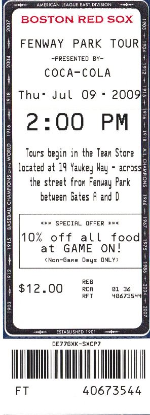
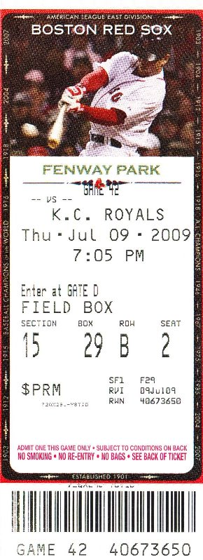

Downtown
The majority of activities in Boston are situated in the compact downtown district. Here the colonial history of the city (and indeed the country) can be
experienced by following the Freedom Trail. This 2.5 mile path is marked on the sidewalk by either a red painted line or red bricks. The trail links sixteen
landmarks which have contributed to the freedom of the country. Start the trail from Boston Common, Boston’s premier green space, and take in the Old North
Church, Faneuil Hall, Old South Meeting House, Old State House and the site of the Boston Massacre.
Fenway Park
Boston is a sports town, so to immerse yourself in Boston life you must pay a visit to Fenway Park, home of the iconic Boston Red Sox baseball team. Fenway Park
is the oldest Major League ballpark in the country, which manifests itself in its various quirks. Aside from the strange angles, the famous 37ft high Green Monster
wall in left field is a legendary sight in baseball (initially erected because homeruns were breaking the windows of the adjacent businesses in Lansdowne Street).
Tours of the stadium leave on the hour, but if you can, get to a game to take in the full authentic experience.

